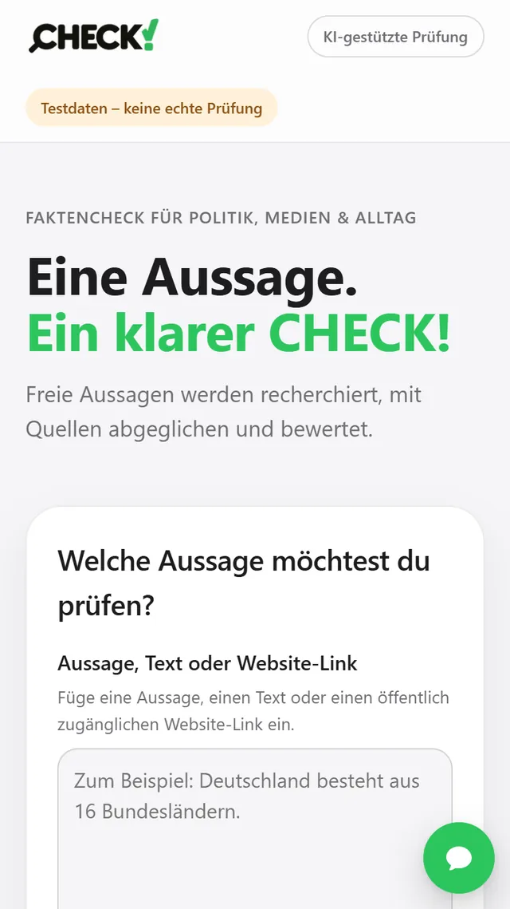
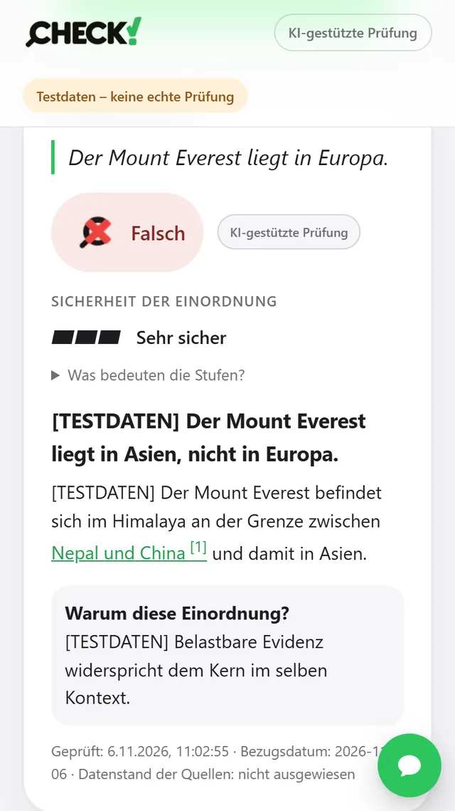
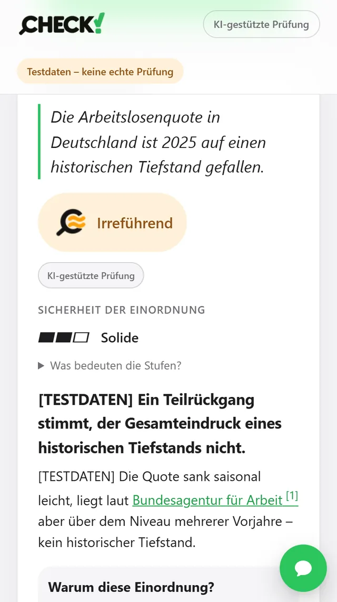

CHECK! – KI-gestützte Faktenprüfung
Vom Produktkonzept zum gemessenen Prototyp: Aussagen aus Politik, Medien und Alltag werden recherchiert, mit Quellen abgeglichen und nachvollziehbar eingeordnet.
Meine Rolle: Produktverantwortung, Anforderungen, Prüflogik, Qualitätssicherung und KI-gestützte Umsetzung.
Ausgangslage
Behauptungen sollen schnell, nachvollziehbar und mit belastbaren Quellen geprüft werden – ohne dass ein Sprachmodell ungeprüft „Wahrheit“ verkündet. Im Zweifel ist ein ehrliches „Unklar“ besser als ein falsches „Belegt“.
Vorgehen
- Produktkonzept, Markenauftritt und UX mit fünf Bewertungsstufen: Belegt, Falsch, Irreführend, Unklar, Nicht überprüfbar
- Prüfkette: Recherche mit Websuche, wörtlicher Abgleich jeder Fundstelle mit der Quelle, unabhängige Zweitprüfung mit Blick auf Bedeutungsfallen
- Urteil nur bei ausreichender Evidenz, sonst „Unklar“ (fail-closed); „Stark“ nur für Quellen aus einem geprüften Register
- Amtliche Statistik direkt aus GENESIS-Online (Destatis) statt aus älteren Pressemitteilungen
- Quellensicherung über archive.org, Kostendeckel mit Tageslimit, Rückmeldefunktion und Chat-Assistent
- Unabhängiges Architektur-Review durch eine Zweit-KI
Ergebnis
- Goldset mit 100 Testaussagen und festgelegten Soll-Urteilen; jeder Entwicklungsschritt wird in bezahlten Messläufen gegen dieses Set geprüft
- Letzter Messlauf: 3 von 100 Urteilen falsch-sicher – das System entscheidet im Zweifel bewusst „Unklar“
- Nächster Schritt: weniger übervorsichtige Urteile, ohne die Fehlerquote zu erhöhen
- Neue Oberfläche in React und TypeScript, Pilotbetrieb in der Cloud
Kennzahlen
- Testaussagen im Goldset
- 100
- falsch-sichere Urteile im letzten Messlauf
- 3 / 100
- automatisierte Tests
- ≈ 290
- KI-Kosten je Prüfung (Schätzung)
- ≈ 0,02 $
Einblicke

Eingabe: Aussage, Text oder Link 
Ergebnis „Falsch“ mit Begründung und Quelle 
Ergebnis „Irreführend“: Kern stimmt, Gesamteindruck nicht
Screenshots aus der Offline-Demo mit Testdaten.
Demo ausprobieren
Die Demo zeigt die aktuelle Oberfläche mit vorbereiteten Testdaten. Es findet keine echte Prüfung statt und es werden keine Daten übertragen.